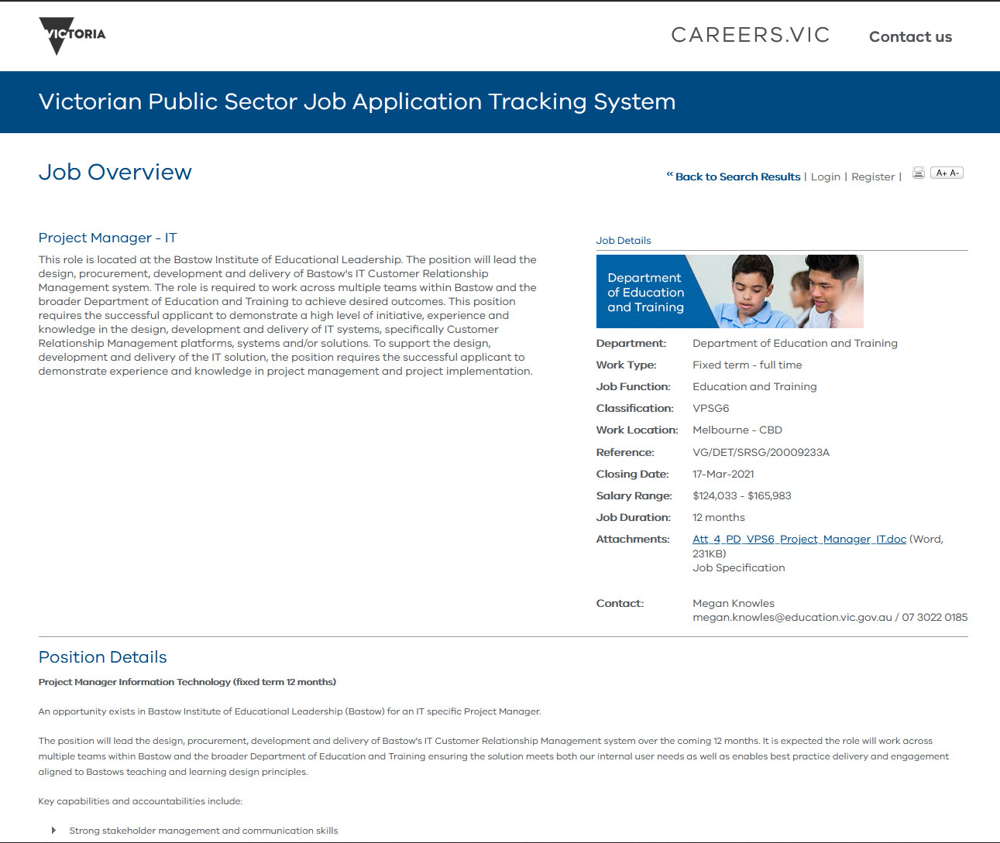
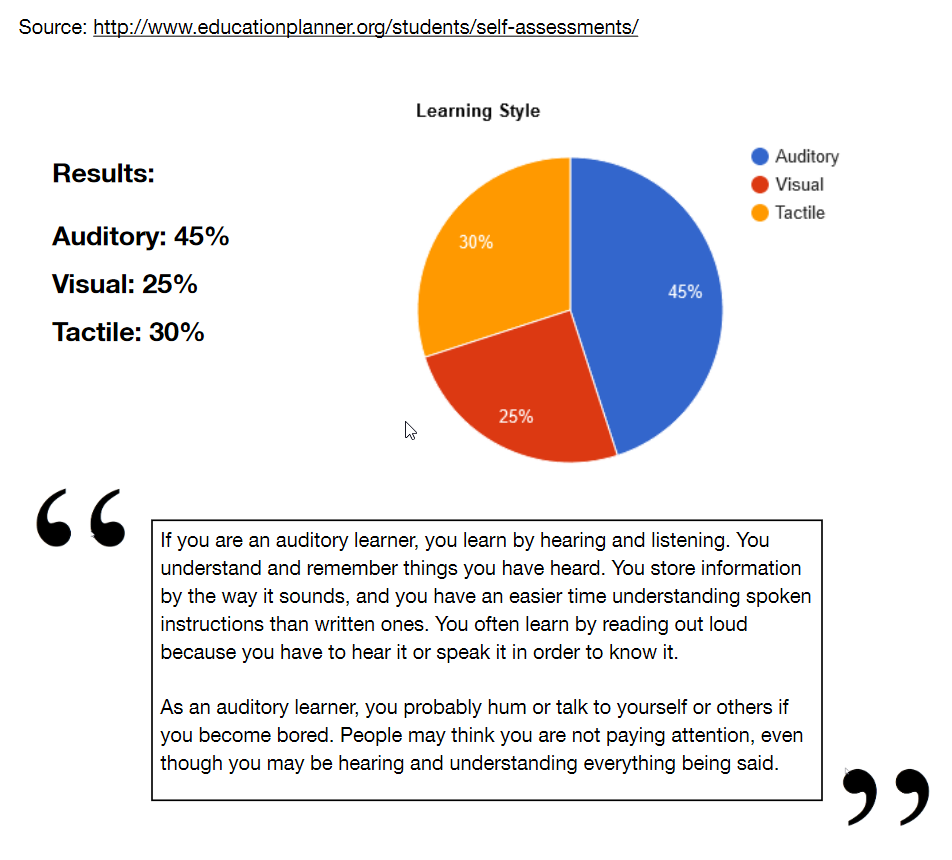
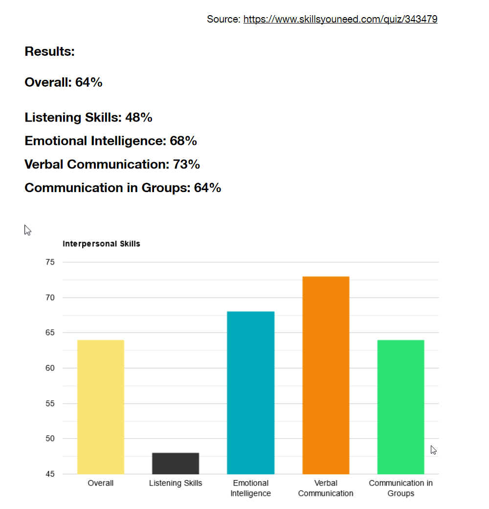
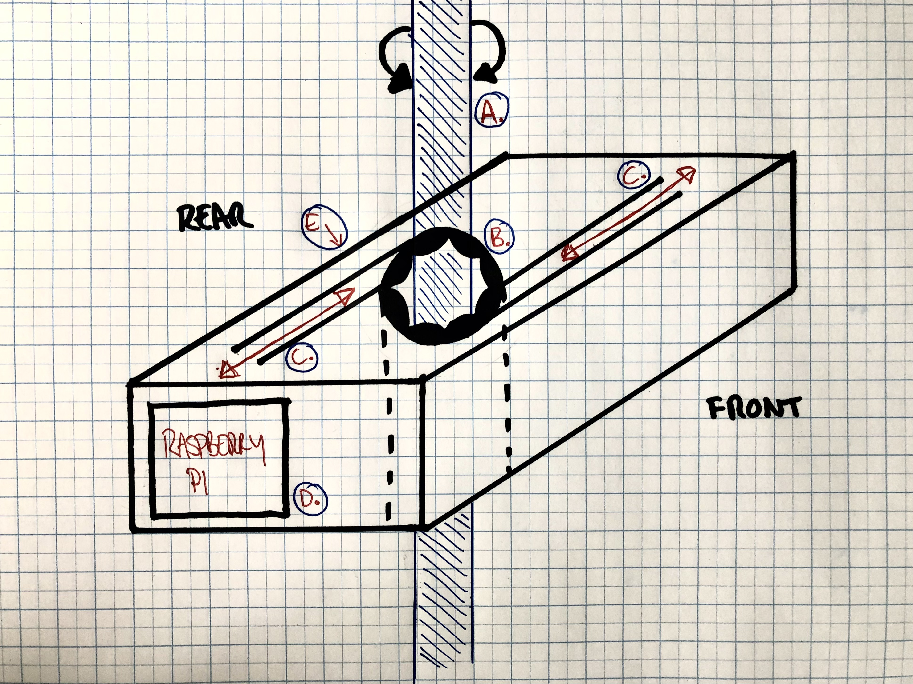

Introduction
Hi, my name is Paul Eccarius.
I'm born and raised in Melbourne, Australia: a first generation Australian with my family being entirely British, although you wouldn't guess it from our surname (it's German).
I currently work in IT as a consultant for a SaaS company. I work with customers from a range of industries to optimise their instances of our software. I have an associate's degree in music business and worked in the music industry prior to moving into IT. I worked in a variety of roles and this is still reflected in my passions outside of work - playing guitar and collecting records. I love watching the NFL (go 49ers!) and reading, primarily non-fiction or science fiction.
If the photo loaded correctly...that's me!
This is my first attempt at building a website or using any coding language and I'm really looking forward to diving in deeper!
Interest in IT
My interest in IT began at an early age. My mother was a nurse when I was young but identified that computers were fast becoming an essential work tool. She bought a PC and started a second job at night typing up notes and documents for various clients from their dictaphone recordings. It didn't take long for my father and I to reappropriate this machine for video games.
This was a couple of years before Windows 3.0 was released so my first exposure to making a computer do something was through using DOS and an early file management system called XTree Gold. I've been fortunate to have been connected to computers through all the dramatic change from that point, both in terms of hardware (all versions of Windows between now and then, MacOS and some experimentation with Linux) and hardware (from 5.25inch floppy discs to the all-digital age). I recall when we were first introduced to the internet by way of Netscape Navigator in school, our reaction was 'the internet looks boring, can we go outside and play football instead?'.
Fast forward many years and I was lucky enough to work for Apple for nearly 5 years onto my current role now. I have reached a point where understanding the abstractions of IT has become limiting (my projects often require me sourcing technical roles) and so I've come back to study to solidify what I've learned along the way and fill in the many gaps in my knowledge. I chose to study at RMIT because of it's flexible delivery but also it's superior reputation in technology and engineering fields.
The more I learn about IT systems and the way the integrate and interconnect, the more is revealed that there is to learn. Of particular interest to me is gaining a broader understanding of programming languages and coding, as well as cloud system architecture and infrastructure. I'm approaching this degree with an open mind towards filling some of the missing parts of the puzzle and undoubtably reveal new puzzles to uncover as I continue forward in my studies and career.
IT Job
Role: Project Manager - IT, Department of Education & Training
Job Description
Description:
The role involves the design, procurement and implementation of a Customer Relationship Management (CRM) platform that will span multiple teams with varying requirements and priorities.
Once designed, the system(s) will need to be built out with an eye to individual team permissions and tools, priorities, tracking and reporting needs. More likely than not, this will involve a number of integrating platforms based on required channels, customer information and functionality.
As well as experience with the market options (the CRM software market is vast) and capabilities and limitations, solution architecture, integrations and scale of these available options, project management will be a key skill in the rolling out of the design workshops, delivering a proof of concept, user testing and eventual rollout of the solution. With many stakeholders, this is as much as role about pure technical implementation as it is about quickly ascertaining customer needs and navigating inter-departmental politics and priorities.
What makes this role appealing to me is that it is effectively what I'm doing now but taken to the logical conclusion in terms of scale. My current role involves the design and implementation of my companies software exclusively. Where my customers may have many systems in place in their overall solution, my focus is limited to my one small area. This role takes all the varying factors into play and so rather than just a customisation and implementation of one software system, is a design and rollout of an entire IT ecosystem.
While I have experience in some of these areas, I will require for this role, skills in large-scale IT project management (Prince2, PMI, Agile, etc.). I will need skills in programming for better understanding the integrations between platforms (API calls, custom applications) and I will also need to better understand the infrastructure underlying these projects - cloud based vs on-premises solutions, the advantages of one over the other and the way this technology works.
My approach to gaining these skills has three elements. Firstly, completing my studies at RMIT! The Bachelor of Information Technology degree gives a great overview of many of the areas I will need exposure to: hardware, cloud, programming and project management, as well as other skills that will benefit my overall understanding of IT systems.
Outside of University, taking on challenges in my current role, and learning from my projects there, will always yield benefits in using and implementing similar SaaS CRM platforms. Finally, staying on top of industry trends and gaining software and project management certifications to keep my learning and knowledge timely and relevant, for example AWS certifications, PMP/CAPM and similar.

My Profile
Myers-Briggs

Learning Style Test

Interpersonal Skills Assessment

Discussion
The first thing that stands out to me immediately as odd is the scores in the Learning Styles test indicating that I'm an auditory learner but the Interpersonal Test indicating I need to work on my listening skills. I put this to the type of questions being asked in the Interpersonal Test perhaps not being the most straightforward (ie, it was pretty clear that saying I don't always make direct eye contact when communicating meant a lower score in the listening column). There is some value in this result however as we can see in the Myers-Briggs results.
The most insightful for me was the Myers-Briggs. In terms of building a team, it shows clearly when I can contribute most effectively: both at the start when brainstorming and mapping out is taking place, as well as when any unforeseen obstacles arise that need to be worked around. I would compliment well with a 'manager' style teammate as well as 'workers' who don't mind executing the busy work. I was pleased to read that Barack Obama is a similar personality type.
Most important takeaway here is that I need to be conscious of my team mates' feeling towards me in the group dynamic. It's an advantage coming into this assessment that I'm a little bit older - I can definitely think back to scenarios where a younger me would have exhibited the weaknesses outlined (insensitivity, argumentativeness) very strongly. Being a little bit older I have recognised this behaviour as unproductive and am conscious of it in a team environment.
IT Project
Overview
The project is a piece of software designed to control a small piece of hardware via Bluetooth connection, in service of automating the opening and closing of venetian-style blinds. The action will be performed either via a set schedule or in time with the sunrise and sunset of any location. The primary focus of the project is the software - customer facing in the form of an app that allows for schedule control and in the backend, a set of instructions that can control the small piece of hardware that will execute the physical task of drawing/releasing the blinds. Consideration will be allowed for future development for integration into exisiting home automation ecosystems, such as Apple HomeKit, Google Home and Amazon Alexa.
Motivation
The home automation market is expected to more than double in size from USD $45.8 billion in 2017 to USD $114 billion in 2025 with the leading market categories in this segment being lighting and security.
As a student, one of the key limitations of my personal adoption of this technology is that I, along with approximately 32% of Australians, live in a rental property - a number growing year on year. The product targets this market by providing a cheap, easily-moveable, temporary solution to automating control of venetian-style blind mechanisms (a rotating rod to open/close) that can be installed and removed easily.
Description
There are two key components to the product - the hardware device and the software that controls it. Although the device will be scoped and described, for the sake of deadline, the software will be the key deliverable for this course.
Part 1 - Controlling Device
The blind-controlling device will be housed in a small, unobtrusive container, rectangular in design but with an opening through the centre (fig. 1, A). The opening will have a rough rubber surface designed for grip. The unit will contain an opening for the venetian-blind rod to be inserted into. Inside the housing there will be a motor and mechanism that rotates the gripped opening (and thus the venetian blind rod) (fig. 1, C) as well as a small computer (most likely a Raspberry Pi or variant) to control the mechanism (fig. 1, D). A battery or power connection of some description for the motor and computer will likely need to be housed in the unit also.

figure 1
The device is in itself fairly rudimentary however the key takeaway is the temporary nature - it can easily be affixed and removed from an exiting venetian-style blind and is therefore perfect for installation in a rental. On the rear of the unit (fig. 1, E), there will be an indicator for the application of double-sided sticky tape, a 3M command adhesive strip, or similar, as well as a connection point for power to the unit or rechargeable power pack.
The product will connect to the user's controlling device via a standard Bluetooth connection.
Part 2 - The Software
The software will be presented in a manner familiar to users, deliverable as a mobile app (iOS due to the vast resources available to first time developers) or a web-based application. The UX will be fairly simple, offering a manual 'open' or 'close' function for remotely controlling the motor of the rotation mechanism (and thus opening or closing the blinds). The UX will be simple and clean, taking cues from the Apple Human Interface Guidelines.
In addition to manual control, the app will offer the ability to set an open/close schedule as well as the option to geolocate the device (via the onboard Pi) so as to set the open/close time in line with local sunrise and sunset times. The user will also be able to 'name' the device (ie, Bedroom, Living Room) so to be able to differentiate between multiple devices.
Part 3 - The Future
Future development could allow the device to integrate with existing home automation platforms and even with products like Google or Outlook Calendar so schedule can be set via a third-party integration. Additionally, the app environment could allow for instances where users have multiple devices - being able to group specific devices and have them run on independent or group schedules.
Tools & Technologies
Hardware:
- Housing
- Small motor connected to a simple rotation mechanism
- Micro-computer (ie, Raspberry Pi or Arduino unit)
- Rechargeable batter or more likely, a power supply connection
- A computer or mobile device to test and run the app
The advantage of using this computing hardware is that it is cheap and easily available. There is also a huge amount of resources available for programming these hobby devices so the execution of a simple command (fire motor for x seconds) shouldn't present a huge obstacle.
The housing unit would likely need to be custom fabricated so due to time constraints will not form part of the final deliverable of this project.
Depending on the software's ability to efficiently 'sleep' the unit when not in use, a rechargeable power pack could be integrated but more likely a small, wired connection will be need to power the computer. The motor will likely be charged via a USB connection to the computing device as the power requirements will be negligible.
Software:
- Operating software for the micro-computer. Most likely a linux-based open source OS (ie, Raspbian).
- Free geolocation API - https://freegeoip.app/
- Free sunrise/sunset time API - https://sunrise-sunset.org/api
- Atom (or similar) for coding the software to control the motor.
- Xcode (or similar) for coding the UX/application.
All of the above is open source or available free of charge. This has the obvious benefit of being zero cost but also means there is a large community available to aid in the project's creation.
Skills Required
Coding!
- Python - for the execution of the mechanical aspect of the project.
- Swift - for the iOS app functionality.
- Javascript - for the API calls.
Some minor mechanical fabrication will be required as well but as it won't be presented in the custom housing of the design document, this shouldn't present a major challenge beyond some minor soldering. It will be presented 'open' as a proof of concept.
The project aims to use tools that readily available for cheap or free.
Outcome
If the proof of concept is successful, it will provide a small, unobtrusive device that can be up and running quickly, allowing renters to enter the realm of home automation without having to commit to major costs or installations.
As the home automation market increases, there is a limit to how much the higher end of the market will tolerate (ie, there is a limit to the number of expensive air conditioning units or security systems the market can sustain). I think the key to expanding the market is to target the inexpensive end. There is no barrier to entry - everybody has access to a smartphone.
This product will allow enthusiasts, renters or people wanting to experiment with home automation an easy way in and will hopefully usher in a new wave of smaller, mobile automation products.